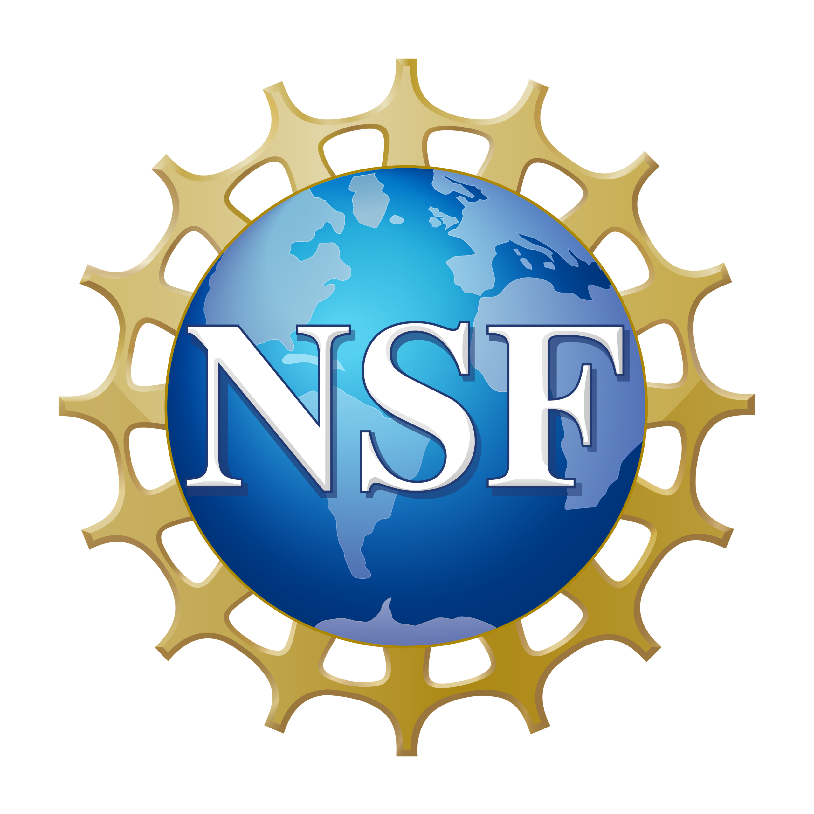

Welcome to Foundational Open Science Skills (FOSS) Fall 2025!¶
Workshop Summary¶
Cyverse and the University of Arizona Data Science Institute presents Foundational Open Science Skills (FOSS) as both a curriculum and a roadmap to guide your computational research and level up your teaching, collaboration, proposal writing, and publishing. FOSS online offers hands-on learning resources to build a solid Open Science foundation for your research and educational projects in a supportive atmosphere with peers and project mentors.
The workshop focuses on introducing you to a host of software tools to help manage your data and make your science open, reproducible, and scaleable. Please see the Schedule for the list of lessons and content covered throughout the workshop.
Workshop Structure¶
Synchronously, we will meet each week virtually for 1.5 hours to discuss and have hands-on activities with our instructors. The workshop content is always available for you to read through to develop your own project-based ideas for strengthening your Open Science skills.
Much of the content interconnects from week to week and many of the skills and approaches we discuss relate to each other. However, students should be able to derive significant value from attending single sessions.
Our ultimate goal in this workshop is for you to "level up" one or more of those philosophies/approaches/skills.
Capstone Project¶
Throughout the duration of the course, students will be working on a project of their choosing that uses the tools and concepts presented in FOSS. The idea is that doing something tangible related to your own science or work will help you 'level up' your open science skills. This could be solo work or a group project depending on your interests. The culmination of the project will be a short presentation to the class on the last day of the course. You can read more about it at the capstone project page.
Expected Outcomes¶
- Proficiently organize your lab, external and internal communications, and teach and conduct research with open source software
- Ability to scale out computations from laptop to the cloud and High Performance Computing/High Throughput Computing systems
- Skillfully manage your research data through the data lifecycle
- Join a larger community of Open Science practitioners
- Be an Advocate for Open Science in your professional circles and communities
By working through an example project relevant to your interests, you will practice open science skills using CyVerse, GitHub, R or Python, and other resources. At the end of the course, you and your team will present a plan for how to integrate open science into your research, lab, or other areas of your choosing.
Funding and Citations:
CyVerse is funded by the Arizona Board of Regents and the US 


The CyVerse Zenodo Community has published, citable versions of CyVerse materials:
Please cite CyVerse appropriately when you make use of our resources; see CyVerse citation policy.